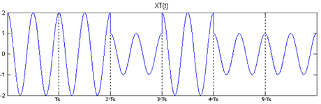
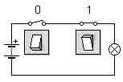

| DIFERENCIA ENTRE DIGITAL Y ANALÓGICO |
|
En el termómetro de mercurio si nuestra vista fuera lo suficientemente precisa podríamos percibir la diferencia entre una centésima o milésima y otra y medir temperaturas como 37,214 ºC. |
|
 Señal analógica |
|
  Señal digital |